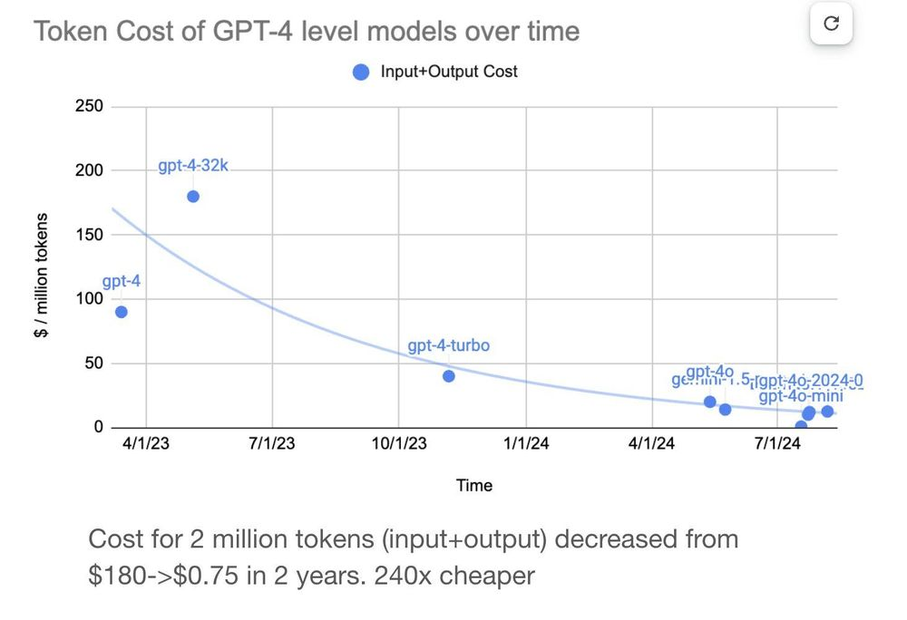

При создании приложений с LLM обычно есть два варианта инфраструктуры: serverless (управляемые API) и self-hosted решения. Каждый вариант имеет свои плюсы и минусы по удобству, кастомизации, масштабируемости и соответствию требованиям.
Serverless LLM inference #
Serverless-сервисы инференса, такие как OpenAI, Anthropic и другие API-платформы, сильно упрощают разработку. Они берут на себя всю инфраструктуру, позволяя платить только за использование.
Эти сервисы работают не только на проприетарных моделях (например, GPT-5 или Claude-Sonnet-4.5). Открытые модели, такие как DeepSeek-R1 и Llama 4, тоже доступны через serverless-эндпоинты на платформах типа Together AI и Fireworks.
Основные преимущества serverless API:
- Простота: Можно быстро начать с минимальной настройкой — нужен только API-ключ и несколько строк кода. Не требуется управлять железом, окружением или сложной логикой масштабирования.
- Быстрое прототипирование: Отлично подходит для тестирования идей, создания демо или внутренних инструментов без инфраструктурных затрат.
- Абстракция железа: Для self-hosted LLM в масштабе обычно нужны топовые GPU (например, NVIDIA A100 или H100). Serverless API скрывают эти сложности, позволяя избежать дефицита GPU, лимитов и задержек при выделении ресурсов.
Self-hosted LLM inference #
Self-hosted инференс — это развёртывание и управление собственной инфраструктурой LLM (в облаке, VPC или на своих серверах). Это даёт полный контроль над развертыванием, оптимизацией и масштабированием моделей — важно для долгосрочного конкурентного преимущества.
Основные плюсы self-hosting:
- Приватность данных и комплаенс: LLM широко используются в современных приложениях (RAG, AI-агенты), где часто нужен доступ к чувствительным данным (клиенты, медицина, финансы). Для организаций с требованиями к комплаенсу и приватности self-hosting гарантирует, что данные остаются в безопасной среде.
- Гибкая кастомизация и оптимизация: Можно точно настраивать инференс под свои задачи:
- Тонко регулировать баланс задержки и пропускной способности.
- Внедрять продвинутые оптимизации: дисагрегация prefill-decode, кэширование префикса, спекулятивное декодирование.
- Оптимизировать для длинных контекстов или batch-processing.
- Применять структурированное декодирование для строгих схем вывода.
- Дообучать модели на собственных данных для конкурентного преимущества.
- Предсказуемая производительность и контроль: При self-hosting вы полностью контролируете поведение и производительность системы. Нет зависимости от внешних лимитов API или внезапных изменений политики, которые могут повлиять на работу приложения.
Сводная таблица #
Выбор между serverless и self-hosted инференсом зависит от ваших задач: удобство, приватность, оптимизация, контроль.
| Параметр | Serverless API | Self-hosted инференс |
|---|---|---|
| Удобство | ✅ Высокое (простые API-вызовы) | ⚠️ Ниже (нужно развёртывание и поддержка LLM) |
| Приватность и комплаенс | ⚠️ Ограничено | ✅ Полный контроль |
| Кастомизация | ⚠️ Ограничено | ✅ Полная гибкость |
| Стоимость при масштабе | ⚠️ Выше (зависит от объёма, быстро растёт) | ✅ Потенциально ниже (предсказуемая, оптимизированная инфраструктура) |
| Управление железом | ✅ Абстрагировано | ⚠️ Требует настройки и поддержки GPU |
Как считать стоимость #
В serverless API стоимость за токен фиксирована, но итоговые расходы растут линейно с использованием. Это удобно для прототипов, но быстро становится дорого в продакшене.
В self-hosting больше работы и инфраструктурных затрат на старте, но стоимость за токен сильно падает с ростом объёма, особенно при оптимизации инференса (например, выгрузка KV-кэша).
На разных этапах внедрения AI стоит пересматривать подход и балансировать между гибкостью и контролем.
Важно: оба варианта (serverless и self-hosted) становятся дешевле со временем благодаря:
- Постоянному снижению цен на API из-за конкуренции (например, OpenAI заметно снизил стоимость токенов, см. картинку ниже).

- Железо (GPU) становится эффективнее и доступнее.
- Проекты вроде vLLM и SGLang повышают эффективность инференса.
- Открытые модели требуют меньше ресурсов благодаря новым оптимизациям.
Подробнее: Serverless vs. Dedicated LLM Deployments: анализ стоимости.
Когда начинать с serverless и когда брать контроль #
Если вы только начинаете с LLM, serverless API — отличный способ быстро стартовать. Прототипирование становится простым, входной порог низкий, можно быстро проверить гипотезы без инфраструктуры.
Но эта простота имеет свои ограничения. По мере роста AI-кейсов и требований к производительности, приватности и уникальности, ограничения serverless становятся заметнее.
Почему? Для серьёзных AI-продуктов важна не только модель, но и слой инференса — именно он «оживляет» модель. Если полагаться только на сторонние API, приложение быстро запустится, но не даст долгосрочного контроля и конкурентного преимущества. В отличие от self-hosted, serverless API сложно тонко настраивать по производительности и стоимости — вы просто вызываете тот же API, что и все остальные. Отсутствие кастомизации мешает строить устойчивое преимущество:
- Композитные AI-системы — так выигрывают топовые команды. Они связывают несколько моделей и инструментов в гибкие рабочие процессы.
- Собственные инференс-стэки позволяют проектировать точные SLA и стоимость для разных задач.
- Дообученные и кастомные модели дают точность и защиту IP, которых нет у универсальных API.
В итоге, качество инференса = качество продукта. Если AI — критически важная часть, нужна инфраструктура, которая быстрая, надёжная, безопасная и заточена под ваши цели.
Вот тогда пора выходить за рамки API и брать инференс под свой контроль.
Что нужно решить при выборе self-hosting? #
Self-hosting LLM даёт полный контроль и гибкость, но требует дополнительных усилий:
- DevOps-время на настройку и поддержку: инфраструктура, деплой, стабильная работа.
- Мониторинг и алерты: наблюдаемость (включая метрики LLM, такие как TTFT и TPS), отслеживание производительности, отказов, SLA.
- Затраты на передачу и хранение данных: большие файлы моделей, облачный трафик, дисковые операции.
- Риски простоев и резервирования: высокая доступность, планирование отказоустойчивости.
- Медленные cold start: запуск GPU-инстансов, загрузка контейнеров LLM, подгрузка весов. Оптимизация старта критична для масштабирования в реальном времени.
Но не обязательно всё строить с нуля. Платформа инференса поможет снизить эти затраты и операционные риски, сделав self-hosting более выгодным.
Частые вопросы #
Что значит self-hosted AI? #
self-hosted AI — это запуск и управление AI-моделями на собственной инфраструктуре (например, дата-центры, приватное облако, выделенные GPU-серверы).
При self-hosting вы полностью контролируете приватность данных, настройку производительности и оптимизацию затрат. Это полезно для команд, которым нужно:
- Развёртывать открытые модели (например, DeepSeek-R1)
- Кастомизировать модели с помощью специальных оптимизаций
- Дообучать модели на собственных данных
- Соблюдать внутренние требования по комплаенсу и хранению данных
Проприетарные модели мощнее открытых? #
Не всегда. Всё зависит от задач.
Проприетарные модели часто лидируют по универсальному мышлению, коду и качеству диалога — они обучены на огромных датасетах и доработаны сложными техниками согласования. Это хороший выбор, если нужна высокая производительность «из коробки» без инфраструктуры.
Открытые модели (Llama, Qwen, DeepSeek) дают больше контроля, прозрачности и гибкости. Их можно дообучать, развёртывать где угодно, оптимизировать по задержке и стоимости. Разрыв между открытыми и проприетарными моделями быстро сокращается, особенно для узкоспециализированных задач.
Например, если дообучить открытую LLM на собственных данных (юридические, медицинские, финансовые), она может превзойти проприетарные модели в этой области. Такой подход нужен многим индустриям.